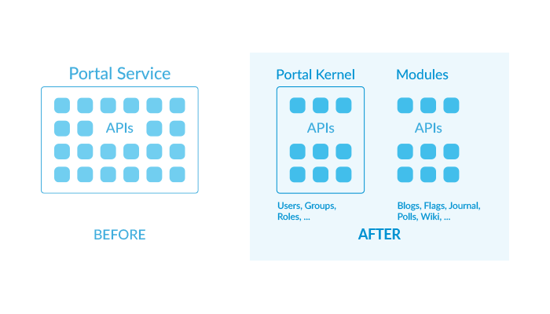

Fixing Upgrade Problems
Step 1 of 2
You may have compile errors due to missing Liferay classes or unresolved symbols because they’ve been moved, renamed, or removed. As a part of modularization in Liferay DXP, many of these classes reside in new modules.
You must resolve all of these Liferay classes for your project. Some of the class changes are quick and easy to fix. Changes involving the new modules require more effort to resolve, but doing so is still straightforward.
Liferay class changes and required adaptations can be grouped into three categories:
Continue on to learn how to resolve each change.
This change is common and easy to fix. Consider resolving these classes first.
Since the module is already on your classpath, you need only update the class import. You can do this by using the Liferay Upgrade Planner or by organizing imports in Dev Studio/IntelliJ. The Upgrade Planner reports each moved class for you to address one by one. Organizing imports in Dev Studio/IntelliJ automatically resolves multiple classes at once.
It’s typically faster to resolve moved classes using the mentioned IDEs. You can follow similar instructions for both IDEs:
Comment out or remove any imports marked as errors.
Execute the Organize Imports keyboard sequence Ctrl-Shift-o (Dev Studio) or Ctrl-Alt-o (IntelliJ).
The IDEs automatically generate the new import statements. If there is more than one available import package for a class, a wizard appears that lets you select the correct import.
Great! You’ve updated your class imports!
You must resolve the new module as a dependency for your project. This requires identifying the module and specifying your project’s dependency on it.
Before Liferay DXP 7.0, all the platform APIs were in portal-service.jar. Many
of these APIs are now in independent modules. Modularization has resulted in
many benefits, as described in the article
The Benefits of Modularity.
One such advantage is that these API modules can evolve separately from the
platform kernel. They also simplify future upgrades. For example, instead of
having to check all of Liferay’s APIs, each module’s
Semantic Versioning
indicates whether the module contains any backwards-incompatible changes. You
need only adapt your code to such modules (if any).
As part of the modularization, portal-service.jar has been renamed
appropriately to portal-kernel.jar, as it continues to hold the portal
kernel’s APIs.

Figure 1: Liferay refactored the portal-service JAR for the new DXP version. Application APIs now exist in their own modules, and the portal-service JAR is now *portal-kernel*.
Each app module consists of a set of classes that are highly cohesive and have a specific purpose, such as providing the app’s API, implementation, or UI. The app modules are therefore much easier to understand. Next, you’ll track down the modules that now hold the classes referenced by your plugin.
The reference article
Classes Moved from portal-service.jar
contains a table that maps each class moved from portal-service.jar to its new
module in Liferay DXP 7.1. The table includes each class’s new package and
symbolic name (artifact ID). You’ll use this information to configure your
plugin’s dependencies on these modules.
For more information on finding and resolving your project dependencies, see Configuring Dependencies.
In cases where the class has been replaced by another class or removed from the product, some investigation is required. The easiest way to resolve this type of issue is to use the Upgrade Planner. It finds removed classes your project is referencing and explains what happened to the class, how to handle the change, and why the change was made. These are listed as breaking changes (among other types of changes). Move on to the next section to learn about Liferay’s breaking changes.